时间：2026-08-12 09:16
实验目的：验证官方规范提示词写法、视频参考有效性、多图参考效果
| 版本 | 提示词写法 | 视频参考 | 图片参考 | 预期验证 |
|---|---|---|---|---|
| v7 | 官方规范（动作绑定 Subject） | 有 | 3张 | 写法修正后视频参考是否生效 |
| v8 | 官方规范（动作绑定 Subject） | 无 | 3张 | 视频参考的净效果（对照） |
| v9 | 官方规范（动作绑定 Subject） | 有 | 5张（多图） | 多图是否增强身份一致性 |
文件：shots/kungfu/output/shot01.mp4 | 5.2s | 934KB
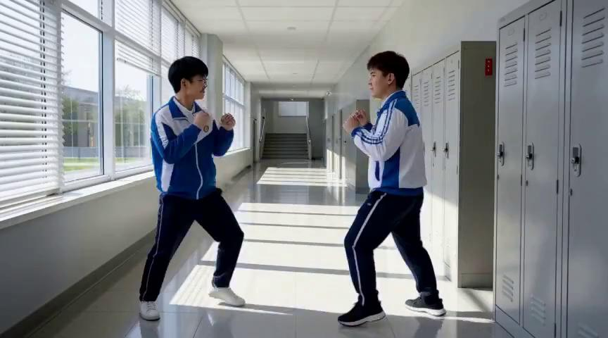
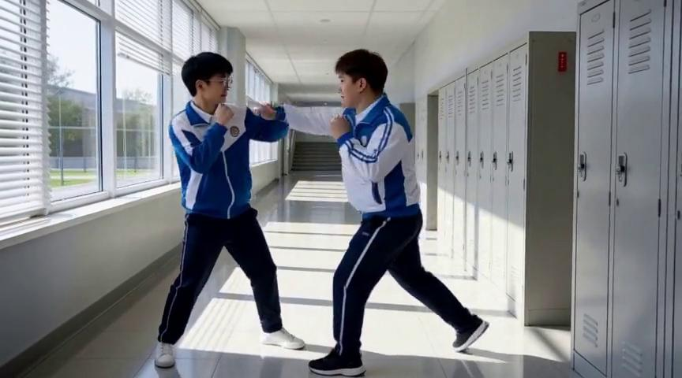
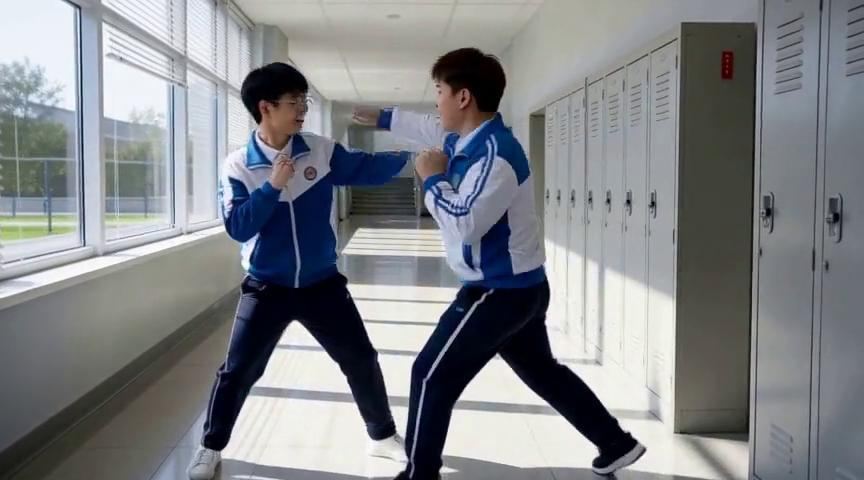
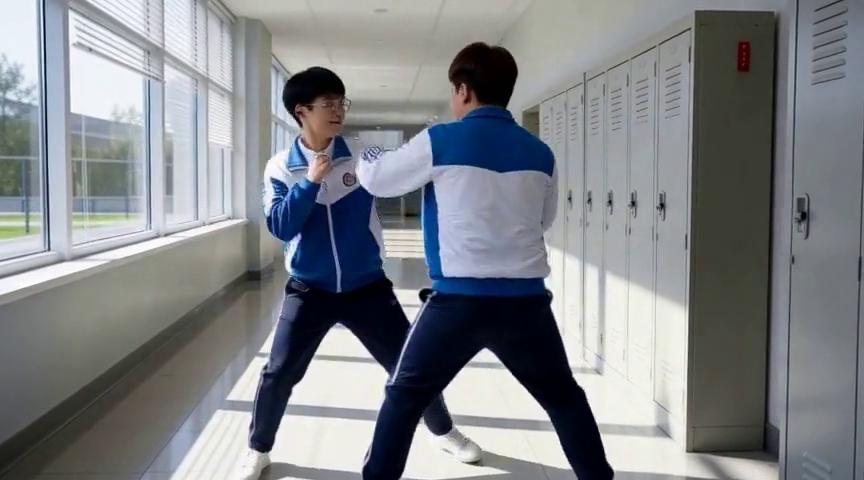
观察：两人摆出拳击架势，有出拳动作，动作比无视频版丰富。
文件：shots/kungfu_v8/output/shot01.mp4 | 5.2s | 879KB
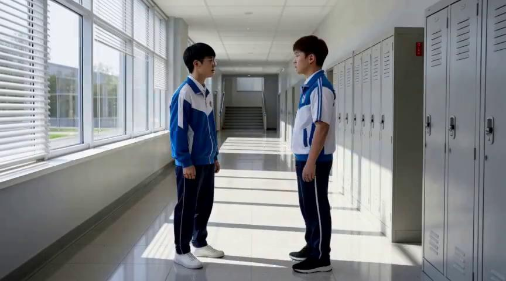
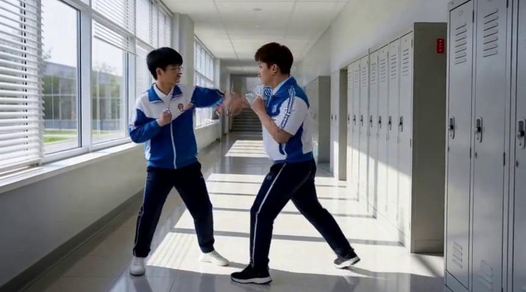
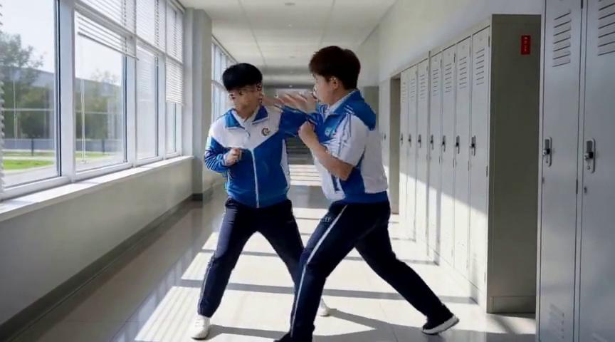
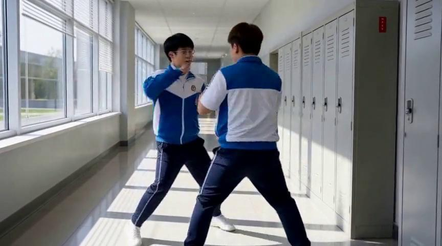
观察：第一帧只是站立对峙，后续有推搡/格挡，但整体更静态。
文件：shots/kungfu_v9/output/shot01.mp4 | 5.2s | 935KB
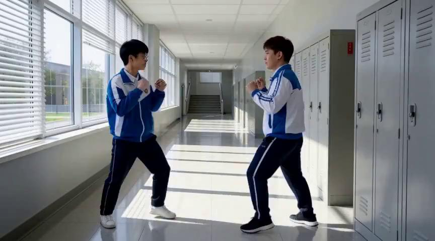
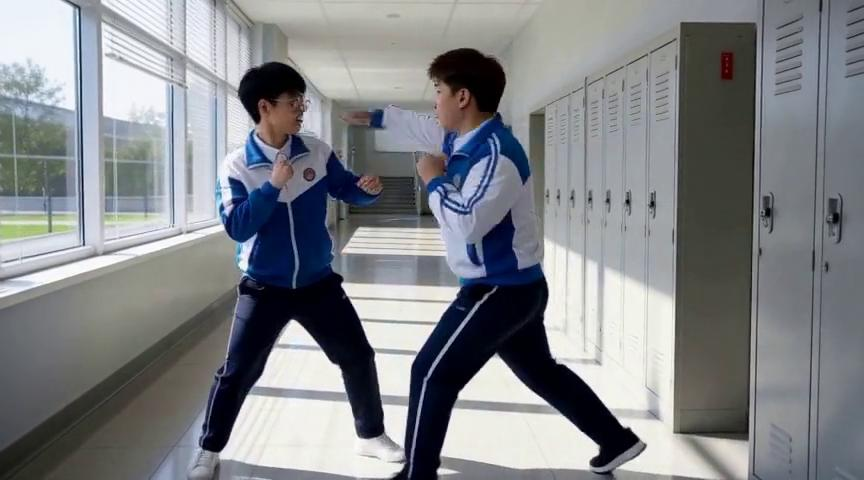
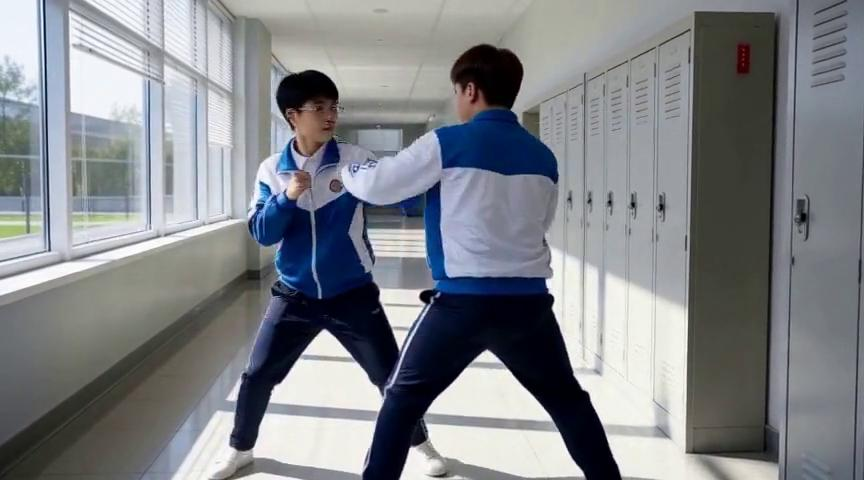
观察：与 v7 几乎完全相同，多图没有带来额外改善。
v7/v9（有视频）动作明显比 v8（无视频）丰富。v8 第一帧只是站着，v7/v9 第一帧就已经摆出拳击架势。
v7（3张图）和 v9（5张图）输出几乎完全相同。可能原因：① H3 最多只认 3 张 ref_images；② 额外图片被忽略；③ 图片本身角度/内容相似，信息量不够。
三个版本都只有"摆出架势→出拳"，没有出现参考视频里的连续交替连击。说明：官方规范写法虽然让视频参考生效了，但"动作迁移"的深度仍然有限——模型学会了"有打架动作"但没学会"双手交替连击的具体节奏"。
| 方案 | 操作 | 预期效果 |
|---|---|---|
| 换参考视频 | 用双人实际对打的视频（而非单人打沙袋） | 目标动作与参考动作语义更接近，迁移成功率更高 |
| 强化文字描述 | 提示词中明确"双手交替连续出拳，左右左右节奏" | 弥补视频参考的不足，双重保险 |
| 加长参考片段 | 用 6-8 秒完整动作片段 | 给模型更多动作信息 |
| 降低文字干扰 | 进一步精简提示词，只保留"动作参考视频" | 减少文字剧本对视频参考的覆盖 |